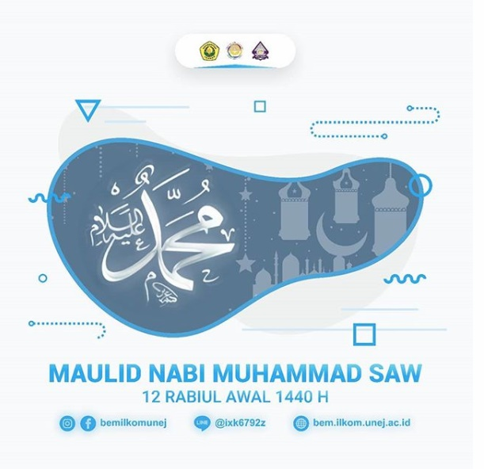
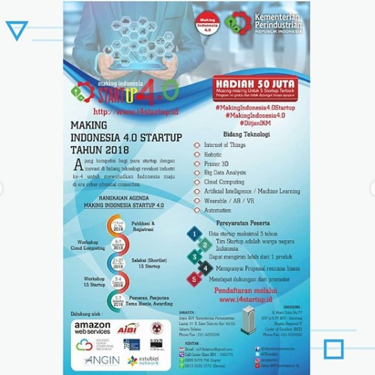
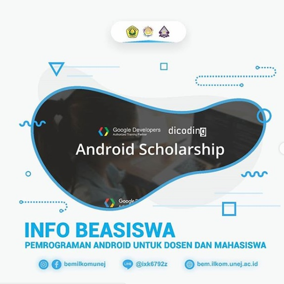

Beranda > BEM
UKM BEM FASILKOM
VISI
"Tercapainya pendidikan yang kompeten terutama di bidang IPTEKS yang didasari tanggung jawab dan sikap profesionalisme serta menyatukan 3 potensi dasar kepemimpinan pemuda yaitu intelektual, spiritual, dan jasad sehingga menjadikan mahasiswa yang bertaqwa kepada Tuhan Yang Maha Esa"
MISI
- Mengadakan kegiatan kemahasiswaan yang bertujuan untuk mengembangkan IPTEKS
- Meningkatkan kualitas sumberdaya manusia di bidang akademik dan non akademik
- Memperkenalkan fakultas di lingkungan masyarakat luas
- Menjalin hubungan dan kerjasama atas dasar kekeluargaan dengan organisasi di dalam atau di luar Fakultas
- Melaksanakan setiap kegiatan dengan disiplin, konsisten, dan bertanggung jawab
- Menyelenggarakan kegiatan sosial yang berasaskan Ketuhanan Yang Maha Esa
- Mempererat tali persaudaraan antar mahasiswa khususnya mahasiswa Fakultas
TERKINI
Ketua dan Wakil Ketua BEM Fasilkom Terbaru periode 2018-2019, Nopember 22, 2018
Selamat atas terpilihnya Narandha Arya Ranggianto dan Nengah Adinda Prastari PutriSebagai Ketua dan Wakil Ketua BEM ILKOM periode 2018/2019.
Semoga amanah dalam menjalankan tugasnya dalam setahun kedepan 🎊👏 Dan dapat merealisasikan visi misi dengan baik dengan seluruh pengurus baru nanti.
BEM ILKOM UNEJ
Apta Darpa
About Us
Open Recruitment Pengurus BEM Fakultas Ilmu Komputer 2018/2019
Pendaftaran pengurus BEM Fakultas Ilmu Komputer 2018/2019 telah dibuka mulai tgl 15 Nov - 21November 2018
Lihat disini -->
Post Populer Lainnya



Follow Us
 |
 |